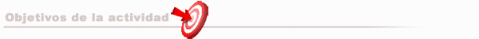
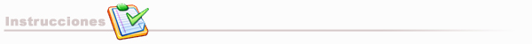

Laboratorio 2 Demo : Conociendo el ambiente de desarrollo Visual Studio .NET

Familiarizarse con el lenguaje de programación C#

En compañía del profesor, completaremos el laboratorio de la sesión pasada. La aplicación a desarrollar debe mostrar evidencia de los siguientes aspectos.
- Manejo de múltiples ventanas.
- Creación de menú.
- Utilización del control TIMER.
- Definición de funciones y procedimientos públicos a la forma.
- Utilización de variables globales en un módulo.
- Funcionalidad en la aplicación a múltiples eventos.
Es necesario que leas antes respecto a la sintaxis del lenguaje en algún libro del lenguaje
No es necesario entregar la aplicación construida.